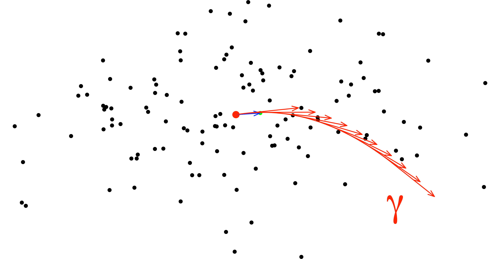
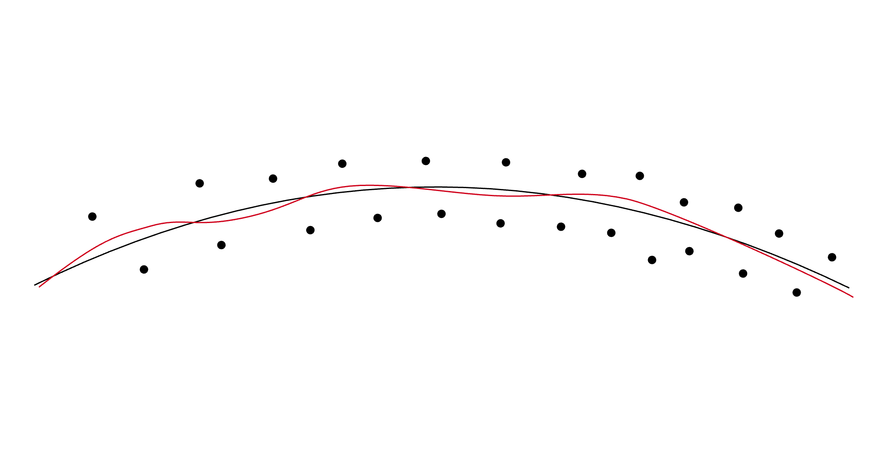
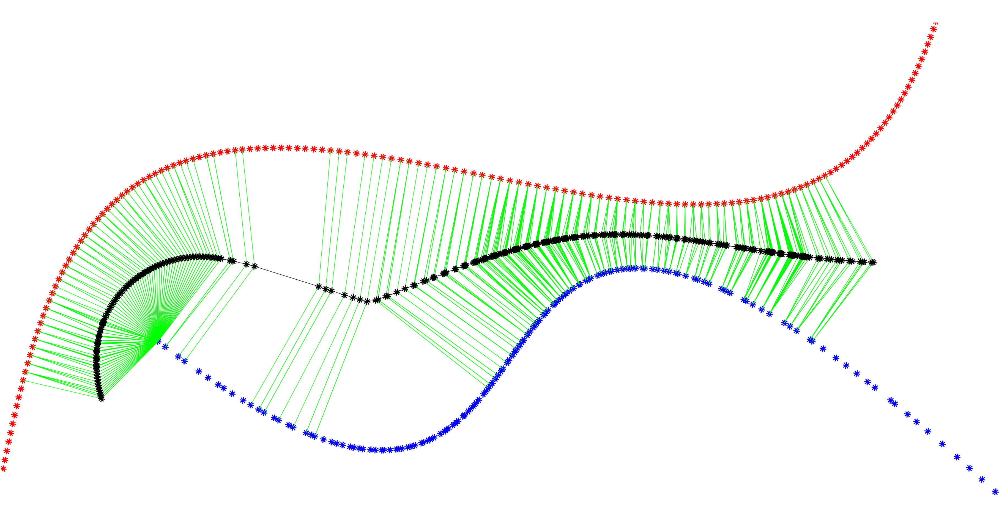
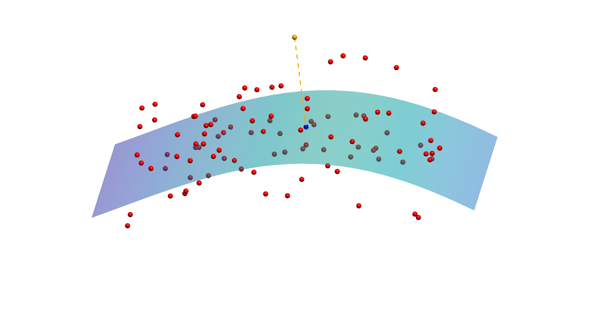

Interaction of Statistics and Geometry
Theory and Methodology
-
Principal Flows
 Curves on the manifold serve as an analogous of principal components.
-
Manifold Fitting
 Fit smooth low-dim manifolds from high-dim noisy data points.
-
Principal Submanifolds

Multi-dimensional generalization of principal flows.
-
Fixed Boundary Flows

Conditional extension of principal flows with fixed boundary points.
-
Principal Boundary
 Principal decision boundary on Riemannian manifolds.
Applications
-
MFCGAN
Combination of manifold fitting with CycleGAN.
-
scAMF
Single-Cell Analysis via Manifold Fitting.
-
CellScope
Cellular analyzing tool via Manifold Fitting.
-
Metabolic Biomarkers

Using manifold fitting to analysis metabolomic heterogeneity and disease risks in UK Biobank.
-
Pancreatic Cancer
Using manifold fitting to analyze pancreatic cancer risk with UK Biobank.
-
Missing Data
Analyze the effect of missing data in UK Biobank.
-
RNA Clash Correction
 RNA clustering and clash correction via Principal Submanifold.